XI. BÖLÜM
NİVEN’İN GÖMÜLÜ MEKSİKA ŞEHİRLERİ
Birleşik Devletler’den ayrıldıktan sonraki ilk adım Meksika’ya geçmek olacak. En kayda değer ve şüphesiz en değerli jeolojik ve arkeolojik keşiflerden biri, Meksikalı bir minerolog olan William Niven tarafından gerçekleştirildi. Niven bunu birkaç yıl önce ortaya çıkarmış olsa da diğer tüm Amerikan keşifleri gibi bunlar da bilim dünyası tarafından hiç dikkate alınmadı.
Niven’in keşfi iki kat öneme sahip, çünkü tarih öncesi insan hakkında dünyayı bilgilendirmenin ve medeniyetin Üçüncü Devir’e, ihtişamlı dağ sıralarının doruklarını çayırların üzerine uzatmasından binlerce yıl önceye dayandığını göstermenin yanı sıra; büyük gaz kuşaklarının ne zaman oluştuğuna ve dağların ne zaman yükseldiğine dair ipuçları da veriyor.
Bu keşif, yüksek bir medeniyet seviyesine sahip ırkların dünyanın gördüğü en müthiş ve korkunç yanardağ faaliyetleriyle mücadele ettiklerini ortaya koyuyor.
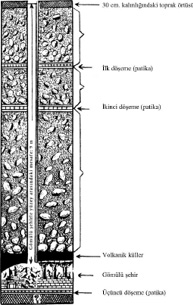
Niven’in bulduğu gömülü şehirler
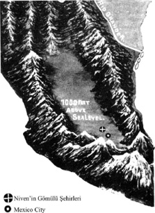
Niven’in toprak altında bulduğu şehirlerin şimdiki çevrelerini gösteren çizim
Keşif insanın, jeolojik Buzul Çağı’ndan ve Pleistosen’e ait Avrupalı maymunadamlardan on binlerce yıl önce var olduğunu gösteriyor. Ayrıca dünya medeniyetinin iki kısma veya döneme ayrıldığına dair bir dizi kanıt zincirine yeni halkalar ekliyor.
ÖNCE VE SONRA
Neyin öncesi ve sonrası? Bunun cevabı ileride anlaşılacak.
Niven’in keşfinin jeolojik ve arkeolojik bu önemi yüzünden, bu harabeler hakkında onun sözlerini yinelemekten daha iyisini yapamam.
“Meksika Vadisi’nde, Texcoco’dan Haluepantla’ya uzanan 200 mil karelik alanda yüzlerce, hatta binlerce kil çukur bulunuyor. Mexico City’ye 300 yıldan daha uzun bir süre inşaat malzemesi sağlamış olan bu çukurlar, muazzam bir harabenin ayrıntılı incelemesini yapmama olanak sağladı. Yakın zamanda çabalarım, bu kıtadaki arkeolojik araştırmalara yeni bir boyut getirecek olan, kayda değer ve ürkütücü sonuçlar verdi. Çalışmalarım büyük vadinin kuzeybatı kısmında, 20 mil uzunlukta ve 10 mil genişlikte bir alanla sınırlıydı. Burada iki uygarlığa ait izlerle beraber her biri büyük bir şehrin altında yer alan, iyi korunmuş üç adet beton döşeme veya zemin buldum. Bu döşemeler yüzeyin 6 ila 25 feet altında. İlkinin üstünde ufak kayalar, çakıl ve kumdan oluşan bir katman ve yüzeyde de vadinin bereketli toprağının oluşturduğu 1 feet kalınlığında bir örtü mevcut. Sıradan bir insan, düz bir ovada 1 feet kalınlığında toprağın birikmesi için gereken süreyi düşündüğünde, bu üst veya daha genç olan zeminin ne kadar eski olduğu kolayca anlaşılabilir. Bu ilk katın üzerindeki kaya, çakıl ve kum tabakasının her yerinde kırık çömlek parçaları, ufak kil figürler, diyorit boncuklar, mızrak ve ok başları, iğler ve çoğu kırık başka aletler buldum. İkinci beton zemin ilkinin 4 ila 6 metre aşağısında ve bu değişen farkın sebebi alttaki döşemenin, muhtemelen sismik hareketler sonucu kırılmış olması. İki döşeme arasındaki boşlukta bir çömlek veya burada bir zamanlar insanların yaşadığını gösteren herhangi bir iz bulmayı başaramadım. İkinci döşemenin altındaysa Meksika’da arkeolojik çalışmalarla geçirdiğim yılların en büyük buluşu yatıyordu. İlk önce 2-3 feet kalınlığında, volkanik kökenli olduğu sonradan kanıtlanan düzgün bir kül tabakasıyla karşılaştım. Küllerin hemen altında büyük, benzer ebatlarda sayısız binaya rastladım. Son günlerde araştırmalarımda incelediğim yüzden fazla kil çukurda da durum aynıydı. Bu evlerin tümü harap olmuş, ezilmiş, küller ve enkâzla dolmuştu. Geçen haftaki çalışmalar sırasında sertleşip taşa dönmüş tahta bir kapıya rastladım. Kapı kemerliydi, yarım çember şeklindeki üst pervazı, 5 inç çapında bir ağaç gövdesinin bükülmesiyle oluşturulmuştu. Bu, Meksika harabelerinde bulunan ilk kavisli kemer. Evlerin duvarlarının beyaz bir çimentoyla örülmüş taşlardan oluştuğu düşünülürse, bu tahta kemer dekoratif amaçlı olmalı. Kapıyı keserek açtığımda, neredeyse saf volkanik külle dolu 30 feet karelik bir odaya ulaştım. Görünüşe bakılırsa üzerindeki toprak, kül ve taşın korkunç ağırlığına dayanabilen tek oda buydu. Beton ve taştan yapılmış düz tavan içeri çökmüştü ama tavandan kopan düz parçaların zeminindeki külün içinde oluşturduğu kemer ve küçük çukurların içinde, bu ölü ırkın kullandığı aletlerin birçoğu sağlam hâlde bulunuyordu. Ekte resimleri görülen bu aletlerin yanında kemikler, dokununca kireç gibi parçalanıp ufalanan sayısız insan kemiği vardı. Mezarlarının yukarısında büyük selin suları kükreyerek başka bir medeniyeti ortadan kaldırmıştı. Ne sel ne de savrulan kayalar bu büyük ırkın uykusunu bölmeye yetmişti. 6 feet derinliğindeki kapı girişinden 13 feet uzakta bir altın ustasının eksiksiz atölyesiyle karşılaştım. Pişmiş topraktan yapılmış 25 inç yüksekliğindeki baca, 15 inç çapında yuvarlak bir ocağın üzerinde incelerek tavana uzanıyordu. Ocağın etrafında, üzerinde hâlâ saf altın parçaları bulunan zeminde pişmiş kilden üretilmiş ve zamanla taşlaşmış 200’den fazla kalıp buldum. Bunların tümü, daha sonra aynı evde bulduğum figürlerin ve putların üzerine kazınmış olanların kopyalarıydı. Görünüşe bakılırsa bu üst sınıftan zengin bir altın ustası ve kuyumcunun eviydi. Kalıp ve desenlerin bazıları, 1 inçin yirmide birinden daha inceydi ve heykellerde o zamanın insanlarının kıyafet, baş, göğüs, kol veya ayak bileklerine taktıkları görülen altın, gümüş ve bakır süs eşyalarının üretiminde kullanılıyordu. Her kalıp sarı ve parlak demir oksitten kalın bir tabakayla kaplanmıştı, muhtemelen bunun amacı erimiş metallerin döküm kabında kalıplara yapışmasını önlemekti. Daha sonra, göğüs için üretilmiş ince bir altın levhanın üzerinde ve takılarda bulduğum, Palenque veya Mitla’da bulunanlara hiç benzemeyen semboller araştırmamı boşa çıkarmadı ve o zamandan bu yana altın ustalarının buna benzer birçok eserine rastladım. İnce işlenmiş, çok güzel parlatılmış olan bu eserler, İspanyolların Hernando Cortez liderliğinde Meksika’yı ilk işgal edişleri sırasında Azteklerin sahip olduğu kadar büyük bir medeniyetin, belki bundan da büyüğünün izlerini taşıyor. Fakat odanın beni en çok etkileyen özelliği duvar resimleriydi. Görünüşe bakılırsa bir zamanlar odanın ortasından geçen bir ara duvar vardı. Arka duvarlardaysa başka bir odaya açılan kapının silik dış hatlarını görmek mümkün. Bu diğer oda öylesine kötü bir hâlde ki, içinde kemiklerden başka bir şey bulunacağını sanmam. Bu odanın ön kısmının altın ustasının atölyesi, gerideki kısmın ise evinin girişi olduğu açık. Burada duvar resimleri kırmızı, mavi, sarı, yeşil ve siyah renkte ve aynı türden Yunan, Etrüsk ve Mısır eserlerine oldukça benziyor. Duvar, zemin hizasında soluk mavi renkte, 14 feet yüksekliğindeki tavanın 6 inç aşağısından itibarense koyu kırmızı ve siyah renkte bir friz (Eski Yunan ve Roma yapılarında taban kirişiyle çatı arasında kalan ve üzeri boydan boya kabartma süslü bölüm. e.n) tüm duvarları kaplıyor. Bu frizin renk ve desenleri, boyandıktan sonra bir tür yerli cilayla parlatıldığı için mükemmel biçimde korunmuş. Yine de tavandan düşen parçalar tarafından üç yerden kırılmış olsa da hâlâ ilk boyandığı zamanki kadar anlaşılabilir durumda. Bir insanın, görünüşe göre bir çobanın, bebekliğinden ölüm döşeğine kadar hayat hikâyesini anlatıyor. Bu odanın altında önemli birinin, muhtemelen yukarıdaki frizde hayatı anlatılan kişinin mezarını buldum. Yalnızca 3 feet derinlikteki, çimentoyla kaplı bu mezar odasında, tam bir iskeletten geriye kalan yetmiş beş insan kemiği vardı. Kafatasının büyük parçalarından birinde, muhtemelen bu mezarın sakinine ölümcül darbeyi indirmiş olan dövme bakırdan bir balta ağzı, ölünün akrabaları veya dostları tarafından çıkarılmadan yerinde bırakılmıştı. Kemikler dokunmayla toza döndü, öylesine uzun süredir mezarda yatıyorlardı, ama odada kemiklerden daha ilgi çekici nesneler de vardı. Yüz yirmi beş ufak, pişmiş toprak put, biblo, figür ve her çeşit kap kacak mezarın tabanına dizilmişti.”
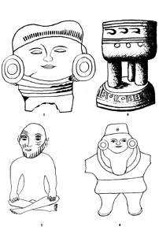
Niven’in en alt şehrinden hatıralar
1. Antik Yunan vazosu 2. Mısır büstü 3. Bir oyuncak 4. Küçük Çinli
“Bunlar arasında en harika ve etkileyici olansa, şekil 3’te görülen pişmiş toprak figür. Bacakları Japon tarzında çapraz, elleri dizlerinde oturan bir adam şeklinde. Bu eser Fenike veya Sami tarzını andırıyor. Başın içi boş, boyunda zekice tasarlanmış düz tepeli çıkıntı başın tabanındaki yuvaya geçerek başın hareket etmesine ve istenildiğinde çıkarılmasına imkân tanıyor. Bu odanın incelemesinin 200 mil karelik bir alanı kaplayan bu büyük harabenin gizeminin çözülmesinde yalnızca bir adım olduğu ve insanoğlunun tarihinde kaybolmuş olan bu harika insanların hikâyesi hakkında hiçbir şey açıklamadığı unutulmamalıdır. Tanımladığım bu yerin üç mil kadar uzağında bulduğum kurumuş antik bir nehir yatağının kum ve çakılları arasında, Güney Asya’nın tüm ırklarını temsil eden binlerce toprak ve kil figür vardı. Daha derinlerde, toprak hizasından 18 feet aşağıda bulunan çömlek ve figürler en iyileri. Böyle bir kültüre ve böylesine kalabalık bir nüfusa sahip bir halkın Mitla, Palenque ve Chichen Itza’dakilerle kıyaslanabilecek kadar etkileyici tapınaklar ve devlet binalarına sahip olduklarını tahmin etmek zor değil. Eğer bu doğruysa, gelecek nesil arkeologlar tarafından keşfedildiklerinde, bu devasa şehrin üzerini örten küller her yıkıntıyı mükemmel biçimde muhafaza etmiş olacak, tıpkı Pompei ve Herculaneum’da olduğu gibi. Bana kalırsa burada, Azteklerin Meksika’da yaşamış ırklar arasında en az öneme sahip ve unutulmuş çağlarda Kuzey Amerika’yı insanlarla dolduran o harika göç sırasında, Meksika sınırını geçmiş muhtemelen son ırk olduklarını kanıtlayan veriler bulunacak.”
Yukarıdakilerin yayımlanmasının ardından Niven gömülü şehirler konusunda yazmaya devam etti. Aşağıdakiler bu ikinci baskıdan:
Küçük Çinli (Resim 4): “Bu figür, çağlar önce Meksika Vadisi’nde yaşamış insanların Moğol (Ç.n: Kastedilen etnik bir grup olan Moğollar değil, Sarı Irk ve Mongoloid olarak da bilinen ve Uzak Doğu insanları ile birlikte Eskimolar ve Kızılderilileri de kapsayan antropolojik bir ırk tipi) ırk tipini bildiklerini ve tanıdıklarını kesin biçimde kanıtlıyor. Bu Çinli figürünü, Mexico City’deki ulusal saraydan on dokuz mil ötedeki Haluepantla yakınlarında, San Miguel Amantla’da bulunan bir çukurda yaptığım kazıda, yerin 30 feet altındaki üçüncü veya en alt medeniyetin yıkıntıları arasında buldum. Beton zemin ve beton duvarlı bir binayla işaretlenmiş ilk (üst) medeniyeti bulduğum derinlik 8 feet idi. Bunun 11 feet altında yatan ikinci (orta) medeniyet, ilkiyle aynı derecede gelişmişti ve burada zeminin 30 feet 3 inç aşağısındaki üçüncü bir yıkıntı tabakası arasında, Meksika’da bulduğum en güzel eserleri barındıran bir oda veya mezara rastladım. Bu odanın 30 feet karelik bir alana sahip olduğunu düşünüyorum. Beton duvarları tabandan bir feet yükseğe kadar ezilmişti. Aşağıda mezar bulunuyordu. Merkezdeki, yine betondan yapılmış dikdörtgen bir platformun üzerinde, boyu 5 feetten uzun olamayacak bir adamın kafatası ve kemikleri yatıyordu. Çok uzun olan kolları neredeyse dizlerine ulaşıyordu ve kafatası şüphesiz Moğol tipindeydi. Boynunda yeşim taşı boncuklardan bir kolye bulunuyordu. Yeşim taşı Meksika’ya ait mineral değildir. Bedenin yanında üzerinde 597 deniz kabuğu olan bir sicim bulunuyordu. Sicim diyorum, fakat kabukları bir arada tutan güderi kayış çoktan çürüyerek toza dönüşmüştü ve wampum veya para, sicimden dökülmüş gibi yerde yatıyordu. Bu paranın yanında en değerli keşif duruyordu: Küçük Çinli.
Bu Meksika’da bulunan türünün ilk örneği olsa da Moğol tipi, Meksika Kızılderilileri arasında, ülkenin Kızılderili kanının aslen Asya’dan geldiğine herkesi ikna etmeye yetecek oranda görülüyor. Çekik gözleri, kapitone paltosu, bol pantolonu ve terlikleri onu her yönden bir günümüz Çinlisi yapıyor. Eksik olan tek şey saç örgüsü. Öte yandan, Çinliler saç örgüsünü kuzeyden gelen Tatarların istilasına uğradıktan sonra kullanmaya başlamışlardı. Bu küçük heykel yaklaşık 7 inç yüksekliğinde ve kollarının kırıldığı yerde içindeki kil kızıl ve kolayca ufalanıyor. Dışındaysa kil taşa dönüşmüş ve üzerinde çekiçle bir çentik açmak bile son derece zor. Göğüste 3 (?) inç ve karında 1 (?) inç genişliğe sahip. Kulaklarında günümüz Çinlilerinin taktığına benzeyen büyük küpeler var; başındaki, merkezinde minik bir düğme olan bir kep ise şimdi cumhuriyet hâlini alan Çin’de imparatorluk zamanında mandarinlerin taktıkları kepin neredeyse aynısı. Günümüzde Çinliler tarafından hâlâ giyilen bol palto bir kurbağa ve düğmeyle tutturulmuş. Göğüste bulunan yuvarlak levha veya süs ise görünüşe göre dövme altından bir tabakayla kaplanmış, fakat bilinmeyen çağlar boyunca toprakla temas ederek soyulmuş. İki kol da omuzdan kırılmış ve tüm mezarın açılması bile kayıp kolların bulunmasını sağlamadı. Bu Çinli figürü Aztekler tarafından yapılmamıştı. Bu, Meksika Vadisi topraklarına, Aztekler bu platoya ayak basmadan binlerce yıl önce gömülmüştü. Aztekler Meksika tarihine yeni gelenlerdi. Ateş ve kılıçla Toltekler, Ölmekler ve Mayalar tarafından inşa edilen şehirleri yağmalamışlar, binaları onları inşa edenlerden silah zoruyla almışlardı. Küçük Çinli tam olarak aradığımız bağlantıyı sağlıyor. O, hiçbir kelime etmeden, Meksika’nın en eski kabilelerinin Moğolların soyundan geldiklerini söylüyor. İskeletin yanında ama platformun dışında yaklaşık 15 inç yüksekliğinde bir saksı duruyordu. İçi şüphesiz Xochitlle, bu ülkenin neredeyse tüm antik ırklarının kutsal sarı çiçeğiyle doluydu.”
Şimdi Niven’in üst üste yatan üç tarih öncesi medeniyetin keşfiyle ilgili raporunu değerlendireceğim:
Jeolojik olarak bu keşfin, şimdiye kadar bulunmuş en eski insan eserlerine ait olduğu gösteriliyor. En genç veya en üstteki medeniyet Üçüncü Devir’in Pliyosen Çağı’na dayanıyor. Yapıların tarzı ve diğer kanıtlar bu üç medeniyetten en yaşlı olanın çok gelişmiş insanlara ait olduğunu ortaya çıkarıyor. Jeolojik olarak, bu medeniyetin Avrupalı Pleistosen dejenerelerinden on binlerce yıl önce geliştiği görülüyor. Niven değerli metallerin kalıba dökülmesinde demir oksit kullanıldığını bulduğunu söylüyor. Bu demir kullanımına dair en eski kayıt ve bronz çağından on binlerce yıl önceye dayanıyor. Niven, altın ve gümüş takılarda bulunan şekillerin Mitla veya Palenque’de bulunanlardan çok farklı olduğunu söylüyor. Le Plongeon eserlerinde; Palenque, Mitla ve Copan’da bulunan şekillerin Mayalara ait olanlardan tamamen farklı olduğunu belirtmişti.
Niven alttaki mahzende gömülü olan adamın hayatının üstteki odanın duvarlarındaki freskler ve resimlerle anlatıldığını buldu. Mayax’ın Can Hanedanı’ndan Prens Coh 16 bin yıl önce gömüldüğünde, hayatı mozolesinin duvarlarındaki fresklerle betimlenmişti. Aynı geleneğe binlerce yıl sonra Mısır krallarının mezar odalarında da rastlıyoruz. Niven adamın kafatasında bulduğu bakır baltanın tavlanmış olduğunu belirtiyor, böylece bu kayıp sanat Üçüncü Devir’e uzanan bir tarihe kavuşuyor.
İkinci mahzen açıldığında Niven cesedin etrafına yerleştirilmiş, aralarında biblolar, heykelcikler bulunan muazzam sayıda eşyayla karşılaştı. Bu geleneğin tüm eski insanlar tarafından uygulandığını, günümüzde de bazı halklar tarafından sürdürüldüğünü görüyorum.
Niven tüm Doğu Asya ırklarının temsilleriyle karşılaşmaktan şaşırmış görünüyor. Eğer karşılaşmamış olsa bu daha şaşırtıcı olurdu, zira hem Güney Asya insanları hem de şimdi gömülmüş olan bu şehirleri inşa edenler aynı anayurttan gelmişlerdi. Niven yeşim boncuklar bulduğunu ve yeşimin bir Meksika minerali olmadığını not ediyor.
Le Plongeon, Mayax Kraliçesi Moo’nun mezarında, “Kraliçe Moo’nun Tılsımı” adını verdiği yeşim taşından bir takı bulmuştu. Bu takıyı inceledim ve kullanılan yeşimin Yeni Zelanda’ya ait olmadığını rahatça söyleyebilirim. Yani Meksika’da bulunan yeşim, buraya ya Çin’den ya da anayurttan gelmiş olmalı.
Niven de diğer bilim insanları gibi, Amerika’ya ilk insanların Asya’dan geldiğini söyleyen eski teorisinde, daha akla yatkın bir açıklama arayışıyla geri adım attı. “Meksika’nın en antik kabileleri Moğol ırkın uzantılarıydı” ifadesi bir açıklama gerektiriyor.
Karayip Denizi’nin kıyıları boyunca bölgenin asıl sakinleri başka bir ırkla karışmış ve Moğol tipi çoğunlukta olmuştu. Yucatan ve Orta Amerika’nın iç bölgeleri boyunca beyaz bir ırk çoğunluktaydı. Bunların adı Mayalardı ve Avrupa, Anadolu ve Kuzey Afrika’nın beyaz ırklarının onlardan geldiği kolayca görülebiliyordu. Yucatan Yarımadası’nın kuzeyinde tüm kayıt ve detaylar asıl yerleşimcilerin büyük kısmının, hatta belki de bu kuzey bölgelerde tümünün Moğol ırktan olduklarına işaret ediyor. Zamanla kuzey Moğol kabileleri Meksika ve Orta Amerika’nın tamamını istila ettiler. Erkekleri kılıçtan geçirip kadınları köle yaptılar, böylece şimdi, Niven’in dediği gibi, tüm Meksika Kızılderililerinde Moğol kanının izi görülebiliyor.
Niven ikinci mezarda bulunan sarı çiçekleri not ediyor ve bunun Meksika’nın tüm antik ırklarının uyguladığı bir gelenek olduğunu belirtiyor. Sarı her zaman kutsal renk olmuştu. Antik halklar için öyleydi, bugün bazı halklar için hâlâ öyle.
Tarih öncesi şehirler alt alta gömülü bulunduklarında arkeologlar bulundukları sırayı belirtmek için ilk, ikinci ve üçüncü terimlerini kullanırlar. Bu, ilk medeniyetin en eski olduğunu sanan sıradan biri için kafa karıştırıcı olabilir. Medeniyetler bulundukları derinliklere göre numaralandırılır; yani ilk keşfedilen yer seviyesine en yakın ve aynı zamanda en genç medeniyet, en derindekiyse en yaşlı medeniyettir. Aynı şekilde “medeniyet” kelimesi de insana birçok medeniyetin var olduğunu düşündürebilir, oysa insan dünya üzerinde ortaya çıktığından beri yalnızca iki medeniyet var olmuştu. Bu ikisi bundan sonra “İlk ve Şimdiki Büyük Medeniyetler” olarak tanımlanacak. Gömülü bulunanlar için ise koloni veya yerleşim kelimeleri daha uygun, bölgedeki ilk, ikinci ve üçüncü yerleşimler şeklinde olduğu gibi.
Genel olarak konuşmak gerekirse, gömülü şehirler tarih öncesinden. Tarih öncesi şehirlerse İlk Büyük Medeniyet’e ait. Niven’in “Gömülü Meksika Şehirleri” ve Schliemann’ın “Antik Truva”sı tarih öncesi şehirlere birer örnek, Pompei ve Herculaneum (Herculaneum, İtalya’da eski bir Roma kentidir. 24 Ağustos 79 tarihinde Vezüv Yanardağı’nın patlamasıyla yok olmuştur. Aynı günde Stabiae ve Pompei kentleri de yıkılmış, yok olmuştur. Efsaneye göre kentin kurucusu Herkül’dür) ise birer istisna. Pompei ve Herculaneum da gömülmüş olsa da tarihleri biliniyor, dolayısıyla tarih öncesine ait değiller. Aynı şekilde, İlk Medeniyet’in birçok şehri gömülü hâlde olsa da hâlâ toprak üzerinde ama harabeye dönmüş durumda olanlar da var. Lübnan’daki Baalbek ve Yucatan’daki eski Maya yıkıntıları, ayrıca Polinezya ve diğer Güney Denizi Adaları’nda bulunan harabeler bunlara örnek teşkil ediyor.
Niven’in tarih öncesi şehirlerinin tümü “İlk Medeniyet’e” ait ve “Günümüz Medeniyeti” sırasında inşa edilen Mexico City yakınlarında bulunuyor. “İlk Medeniyet” zamanında, Niven’in tarih öncesi şehri üç kez kurulmuştu. Bunun önemle hatırlanmasını diliyorum, zira aşağıda, yalnızca birkaç mil uzaktaki başka bir tarih öncesi şehrin de “üç kez inşa edildiğini” belirten kayıtlardan alıntılar sunacağım. Bu kayıtlar, bu son şehrin neden ve nasıl yıkıldığını anlatıyor. Biri sebebi jeolojik olarak açıklıyor. Diğeri ise belgelere dayanıyor ama iki kayıt da her yönden örtüşüyor. Mexico City’nin günümüzde rakımı 7.400 feet, dolayısıyla Niven’in bulduğu şehirlerin günümüz rakımı da aynı. Jeolojik bir problem söz konusu olduğundan Niven’in bulguları olağanüstü bir araştırma alanı açılmasını sağladı. Şu gerçeklere bakmak bile, jeoloji bilgilerimizin büyük kısmının baştan yazılması gerekliliğini gözler önüne sermeye yetiyor:
1. Tarih öncesi bir şehir, deniz seviyesinden 7.400 feet yukarıda bulunuyor.
2. Şehir toprağın 30 feet altında yatıyor.
3. Şehrin üzeri volkanik bir kül tabakasıyla kaplı.
4. Şehir, dağlarla çevrilmiş bir platoda bulunuyor.
5. Dağlar, şehrin millerce uzağında.
6. Bu şehrin harabelerinin üzerinde başka bir şehrin kalıntıları var.
7. İki şehrin de üzerinde kaya, çakıl ve kum tabakaları bulunuyor.
8. Bu şehirlerin üzerinde üçüncü bir şehrin kalıntıları var.
9. Bu üçüncü şehir de kayalar, çakıl ve kumla örtülmüş. Niven’in şehirleri günümüzde deniz seviyesinin 7.400 feet yukarısında bulunuyor. Niven en alttaki şehrin volkanik külle kaplı olduğunu söylüyor, fakat herhangi türden lavın izine rastlamadığını belirtiyor, dolayısıyla yanardağın lavının en alttaki şehre ulaşmadığı sonucuna varılabilir. Yakında bir veya birden fazla yanardağın bulunduğu belli, zira küller şehri gömmeye yetecek kadar yüksek miktarda yağmış. Bu durumda, platonun o zaman da şimdiki kadar düz olduğu anlaşılıyor. Bir platoda yanardağ, diğer tüm antik yanardağlar gibi kraterlerin çevresinde birikerek bugün Güney Afrika’da ve Güney Denizi Adaları’nda görülenlere benzer koniler oluşturmuştu. Çok az lav akışı gerçekmiş olması muhtemel. Antik yanardağlarda durum genellikle bu şekildeydi.
Yalnızca küller Niven’in tarif ettiği boyutta bir yıkım için yeterli değil, bu yüzden duvarların parçalanıp tavanların yıkılmasına neden olan gücün sebebini başka yerde aramalıyız. Olası sebeplerden biri, yanardağın patlamasını takip eden ve toprağı yukarı aşağı sarsarak binaların çökmesine neden olan bir deprem dalgasıydı.
Troano Elyazması dünya tarihinin daha ileri bir döneminde depremleri tarif ederken şöyle diyor: “Yeraltının hapsolmuş alevleriyle aralıksız sarsılmak toprağın defalarca batıp çıkmasına neden oldu.” Codex Cortesianus, “Toprak, fırtınadaki bir ağacın yaprakları gibi titreyip sarsıldı.” diyor. Lhasa Belgesi de bunu yineliyor.
Şimdi toprağın 14-16 feet altında yatan ikinci şehre geçeceğim. Bu şehrin üzerinde 4-6 feet kalınlığında bir kaya, çakıl ve kum tabakası var. Raporunda Niven, en alttaki şehrin üzerinde volkanik külün yanı sıra kaya, çakıl ve kum bulunup bulunmadığını belirtmiyor. Yanardağlar kaya, çakıl ve kum katmanları yığmazlar, bu sebeple hangi etmenin bunu yaptığını öğrenmek için jeolojiye danışmalıyım. Kaya, çakıl ve kum tabakaları oluşturabilecek bilinen etmenleri incelemeliyiz.
Jeolojik açıdan kaya, çakıl ve kum tabakalarının suyun işi olduğu biliniyor. Devasa deprem veya tufan dalgaları yollarına çıkan kayaları toplar ve bunları, su taşıma gücünü kaybedene dek sürükleyip yuvarlar. Daha sonra bu maddeler dibe çöker ve bir katman oluşturur. En büyük ve ağır olan maddeler önce çöker ve zayıflayan dalganın içinde yalnızca kum kalana kadar bu devam eder. Dolayısıyla birinci ve ikinci şehirleri kaplayan kaya, çakıl ve kum tabakaları, deprem dalgaları veya tufanlarla okyanustan gelmişti.
Şimdi ise şehirler deniz seviyesinin 7.000 feet yukarısında ve bulundukları platonun etrafı binlerce feet daha yüksek dağlarla çevrili. Hiçbir deprem dalgası veya sel, çevredeki bu dağları aşmak bir yana, Meksika Vadisi’ni oluşturan platonun seviyesine bile yükselmiş olamaz. Böyle bir dalga dünyayı, üzerindeki tüm canlılarla beraber yok ederdi. Yanardağ faaliyetlerinin 200 feet yükseklikte bir dalga yaratması bile mümkün değildi.
Biz incelemeye devam ettikçe durum daha da karışık bir hâl alıyor. Okyanus kaynaklı deprem veya afet dalgalarının Meksika Vadisi’ni iki, belki de üç kez süpürdüğünü söylemeliyim. Bir okyanusa ait iki büyük, yıkıcı dalganın bu bölgeyi farklı zamanlarda, muhtemelen binlerce yıl arayla süpürdüğü ve her seferinde bölgedeki tüm yaşamı yok ettiği açıkça görülüyor. Bugün bir tesadüf olmazsa, külleriyle en alttaki şehri yok eden yanardağa ait en ufak bir iz bile bulunabileceğinden şüpheliyim. Kuşkusuz krateri daha sonra gerçekleşen iki afet sebebiyle kendi içine çökmüş ve yok olmuştu.
Bir an için durup 200 mil karelik bir alanı kaplayan ilk şehir yok olduğunda ölenlerin sayısını düşünelim. Afetle yok olan diğer şehirleri ve kırsalı göz önüne almasak bile milyonlarca insan yalnızca bu şehirde hayatını kaybetmiş olmalı. Dünyanın en büyük trajedileri tarihe hiç geçmemiş. İlk ve ikinci şehirleri kaplayan afet dalgaları uzak mesafede oluşmuş ve şehirlere ulaşana dek enerjilerinin çoğunu kaybetmişti. Niven’in küçük olarak nitelendirdiği kayalar bunu gösteriyor. Çökelti tabakasının kalınlığı da bunu destekliyor. Öte yandan şehirleri örtmüş bulunan maddelerin, dalgaların yıkım yolculuğu sırasında taşıdığı tek şey olmadığı da unutulmamalı. Büyük kayaların tümü şehirlere ulaşmadan önce bırakılmıştı, şehirlerin daha ötesine kadar taşınan birçok şey de vardı. Şehirlerin üzerindeki katmanlar yalnızca dalgaların yol boyunca bıraktıklarını gösteriyor.
Kaya, taş, çakıl ve kumdan oluşan bu tabakalar, meydana geldikleri zaman toprağın deniz seviyesinden yalnızca birkaç feet yüksekte olduğunu en kesin ve ikna edici biçimde kanıtlıyor.
Bu şehirlerin var olduğu zamanlarda Mexico City ile okyanus arasında hiçbir dağ veya sıradağ yoktu, Mexico City’nin üzerinde bulunduğu plato da deniz seviyesinin 7.400 feet üzerinde olan şimdiki irtifasına yükselmemişti. Muhtemelen bu şehirlerin zamanında Meksika’nın tümü, deniz seviyesinin 100 feet üzerinde bile olmayan düz bir araziydi. Eğer günümüzdeki dağlar o zaman da var olsaydı veya Meksika Vadisi şimdiki seviye veya yükseltisinde bulunsaydı, bir deprem dalgasının veya tufanın bu bahtsız şehirleri gömecek kayaları taşımak bir yana, onlara ulaşması bile mümkün olamazdı.
Yukarıdaki savımı destekleyen birçok örnekten biri:
Dağlar ve dağ sıraları dünya tarihinde nispeten yakın bir döneme ait, zira dağ sıraları gaz kuşakları tarafından şekillendirildi. Dünya, Pliyosen’in sonunda manyetik dengeye ulaşana dek bu gazlar sınırlandırılmış değildi ve onlar sınırlandırılmadan dağlar yükseltilemezdi. Bu sebeple de Pleistosen’in başlangıcına dek dünya yüzeyinde hiçbir dağ veya dağ sırası yer almıyordu. Çeşitli yayınlarda Avrupalı jeologların dağların yaşıyla ilgili fikirlerinde tereddüt yaşadıklarını görüyorum.
Bu antik Meksika şehirleri dağlar yükselmeden önce var olduğuna göre Pleistosen Çağı’ndan önceye dayandıkları açık. Dolayısıyla bunlar Üçüncü Devir şehirleri. Eğer sonuncu, en üstteki şehir Pleistosen’in şafağından önce inşa edilip yıkıldıysa, gülünçlüğünü dağa önce de belirttiğim jeolojik hesaplamalara göre yaşı 200 bin yıl olmalı. Eğer en üst şehir 200 bin yıldan daha yaşlıysa, en alttaki üçüncü şehrin yaşı kaç olacak? Üç şehrin yaşı da Üçüncü Devir’e dayanıyor. Benim fikrime göre en alt şehir en azından 50 bin yıllık.
Gaz kuşakları oluşmadan önce bölgede ne tür yanardağ faaliyetlerinin gerçekleştiğini söylemek imkânsız; fakat jeolojik olgulara (ve onları destekleyen Maya geleneklerine) bakılırsa çok şiddetli olmalılar. Meksika, Orta Amerika ve Karayipler, dünyanın kabuğunda oluşmuş en büyük gaz kuşağı bağlantılarından birine sahip. Burada ayrı kuşaklar bir araya gelmekle kalmıyor, bazıları diğerlerinin altından ve üstünden geçiyor. Burası dünyanın en büyük volkanik tehlike noktalarından biri. Gaz kuşaklarının bir veya birden fazlasının tıkanmasıyla bu bölgede her şey olabilir.
Gaz kuşaklarının biçimlenmesi sırasında bu bölgedeki volkanik faaliyetler aşırı derecede şiddetliydi. Suların altında ve üstündeki topraklarda şiddetli kabarmalar gerçekleşiyordu. Su altındaki karaların yükselmesi, doğal olarak suyun taşarak deprem dalgaları hâline gelmesine neden oldu. Tüm önemli gaz ku-şaklarmın bir kısmı okyanus yataklarının altında yer alır.
Bu volkanik etkinliklerle ne kadar kara parçasının sulara gömüldüğünü, ne kadarının ise yükseldiğini söylemek mümkün değil. Bildiğimiz dört kıta sahanlığı dibe gömüldü. Okyanus yatağının yükselmesi yukarıdaki suların yer değiştirmesine neden oldu. Bu taşan sular dev dalgalar şeklini aldı ve yakınlardaki alçak araziler üzerinde akarak önüne çıkan her şeyi silip süpürdü. Dalganın genişliği ve yüksekliğiyle birlikte yıkım gücü de doğal olarak su altından yükselen kara parçasının hacmiyle orantılıydı. Gaz kuşakları oluştuğunda ve dağlar yükseldiğinde böyle yıkıcı felaketlerin de önüne geçilmiş oldu.
Avrupalı maymunsuların-Piltdown adamı, Heidelberg adamı ve Neanderthal adamının- daha önce de belirttiğimiz gibi erken Pleistosen sırasında, başka bir deyişle Niven’in üst şehrinden sonra yaşamış oldukları jeolojik olarak da kabul ediliyor. Dolayısıyla Niven’in keşifleri, Avrupa’nın maymunsu insanlarından on binlerce yıl önce Amerika’da insanın gelişmiş bir medeniyet kurduğunu ve bu insanların ayrı türler değil, ayrı bireyler olduklarını kanıtlıyor.
Görünüşe bakılırsa Niven, şehirlerin ikisinin tufanlarla yok olduğunu kesin biçimde belirtirken bunların yalnızca okyanustan gelebileceğini ve okyanus dalgalarının Meksika Vadisi’ne ulaşmasının mümkün olmadığını göz önüne almıyor. En alttaki şehrin üzerindeki iki beton döşeme, sonraki iki koloninin el işçiliğini taşıyor. Bu iki koloni tufanlarla yok olmuştu. Bunları kaplayan örtünün kaya, çakıl ve kumdan meydana gelmiş olması, bu şehirlerin yıkılmasına sebep olan yanardağ aktivitelerinin uzakta, okyanusun altında gerçekleştiğini gösteriyor. Aynı olayın iki kez tekrarlanmış olması, bu keşfe son derece büyük bir arkeolojik önem katıyor.
Şehri örten tabakanın kalınlığı, şehirlerin inşa edildikleri zamanlar arasındaki farka dair en ufak bir ipucu vermiyor. Yalnızca bu malzemeyi getiren dalgaların boyutu ve şiddeti hakkında bir fikir veriyor. Üst ve ikinci şehri örten kayaların, Meksika’nın Pasifik kıyılarından geldiğinin anlaşıldığını söyleyen bilgiler aldım.
Bu antik medeniyetle bizim medeniyetimiz arasında ne oldu da bu büyük geçmişten geriye yalnızca bu parçalar kaldı? Bu sorunun cevabını önceki bölümlerde zaten vermiştim. Niven’in bulguları sadece verdiğim cevabın doğruluğunu kanıtlamış oldu.
Niven’in İkinci Büyük Keşfi: Mexico City’nin 4-5 mil kuzeyindeki kırsal bir bölgede Niven, bazı yönlerden daha önce anlatılandan da önemli başka bir keşif daha gerçekleştirdi.
Başka eserlerle beraber, 12 bin yıldan daha eski 2.600 taş tableti gün ışığına çıkardı.
Bu devasa koleksiyon içinden birçoğunun doğrudan Mu’dan bahsettiğini gördüm. Bu gruptan seçtiklerimi, deşifre ve tercümeleriyle birlikte veriyorum. Bu keşfin tam ve detaylı bir incelemesi, Mu’nun Çocukları’nda yer alıyor. Kitap, detayları özellikle bu kitaplar için yazmış olan William Niven’in imzasını taşıyor.
Tablet 4-Bir Sunak Resmi: Bu resim 7 feet boyunda, 5 feet eninde, 1 (?) feet kalınlığında ve ağırlığı bir tondan fazla gelen bir taş üzerine çizilmiş. Niven bunun bir sunağın parçası olduğunu söylüyor. Üzerideki yazı Kutsal Dörtlü’ye adanmış. Bu bir simgeleme şaheseri, çünkü üzerinde hemen her çizgiye ikili bir anlam eklemeyi başarmışlar. Okunması hiç de zor değil.
Çözümleme ve Deşifreleme: Üç doğal arkeolojik kısma ayrılmış olması nedeniyle, anlaşılmasını kolaylaştırmak için deşifre edeceğim.
Kısım: Taç.
Kısım: Sorguç.
Kısım: Gövde ve elbise.
Taç: Taç, şekilde 1, 2, 3 ve 4 olarak numaralanan, kutu şekilli Dört dantelden oluşuyor. Tacın uçları, A ve B olarak işaretlenen hiyeratik H harfinin üzerine uzanmış. Tacın rengi kırmızı.
H, Kutsal Dörtlü’nün alfabetik sembolü. Dört, Kutsal Dörtlü’nün rakamsal sembolü. Taç Kutsal Dörtlü’yü, yani Yaratıcı’dan gelen Dört Büyük Temel Kuvvet’i simgeliyor.
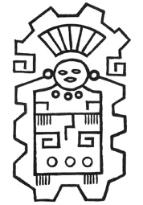
Tablet 4
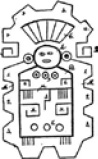
Anahtar
C-Sorguç: Bu, tacın önündeki süsleme. 7 sarı renkli ışın veya tüyden oluşuyor. Sarı tüyler yalnızca kraliyet ailesi tarafından takılırdı, dolayısıyla sorgucun rengi bize, onun bir krala ait olduğunu anlatıyor.
D-Gövde: Bu, hiyeratik M harfini oluşturan bir dikdörtgen. M, Mu’nun alfabetik sembolü, yani sarı renkli bu gövde Mu’ya ait.
E-Baş: Dikdörtgenin tepesinde klasik bir insan başı, Mu’nun Kral-Başrahibi olan Ra Mu’ya ait. Adı, ışınlarla çevrelenmiş güneş şeklindeki küpeleri sayesinde anlaşılıyor.
F-Kolye: Bunlar ışınları olan üç güneşten oluşuyor. Üç, Mu’nun rakamsal sembolüydü, güneş ise arması.
G-Kollar: Kırmızı renkli kollar Yapıcı anlamına gelen sembolle oluşturulmuş.
H-Kuşak: Sarı bir kuşak gövdeyi bacaklardan ayırıyor. Elin parmakları dizlerin üzerinde; Beş, yani tüm Tanrısallığın rakamsal sembolü.
I-Etek: Etek, Büyük veya Usta Yapıcı anlamına gelen sembolle, dizlerin arasından ayrılmış.
K-Hiyeratik H Harfi: İki yanda, ellerin aşağısında Kutsal Dörtlü’nün, Dört Büyük Temel Kuvvet’in sembolü olan hiyeratik H harfi var. Bunlar da sarı renkte.
L-Üç Çember: Bu, Mu’nun rakamı olan üç sayısının bilindik Naga sembolü. Kırmızı renkte. Gövdenin aşağısında ayaklarda beşer parmak görülüyor, bu da elin parmaklarıyla aynı anlamda.
M-Pelerin: Gövde kırmızı bir pelerinle sarılmış. Pelerinin kenarları Üç adet köşeli dantelden oluşuyor, yani rakamsal sembolüyle tekrar Mu’nun adı anılıyor.
Açıklama: Bu tapınak, emriyle Kendisi’nden yayılan Dört Büyük Temel Kuvvet’in evrende yasa ve düzeni kurduğu ve her şeyi yarattığı Yüce Yaratıcı’ya adanmıştır. Tapınak, Yüce Yaratıcı’nın ağzı olan anayurt Mu’nun Kral-Başrahibi Ra Mu’nun yetkisinde. Bu oldukça önemli bir metin, medeniyetin Mu henüz suyun üzerindeyken geliştiğini gösteriyor. Tapınak onun yetkisi altındaydı, dolayısıyla bu Mu sulara gömülmeden önceye ait olmalı.
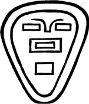
Tablet 684
Mu, M.Ö. 10.000 yılında sulara gömülmüştü. Yani bu büyük Amerikan uygarlığının 12 bin yıldan daha önceye dayandığına dair elimizde kanıt var.
Niven’in Meksika Taş Tabletleri’nden Biri (Tablet 684):
Bu taşın üzerindeki çizim sıradan bir insan yüzüne ait. Başın dış hatları taşın kenarlarını takip edecek şekilde. Taş Niven tarafından Hacienda Leön’da bulundu. Bu küçük, harika bir taş. Anayurt Mu dili ve alfabesiyle konuşuyor ve söylediği, “Mu, Anayurt. Batı Toprakları.” Yazılar yalnızca Naga harflerinden oluşuyor. Taşın üzerinde tek bir Uygur ve Kuzeyli harfi bile yok. Semboller kutsal İlhamlı Mu Metinleri’nde bulunanların aynısı. Parça parça incelendiğinde, sembollerin anlamları şöyle:
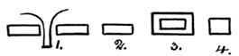
Anahtar
Deşifre ve Tercüme: Başın dış hatları:
1: Burun.
2. Bir göz. Dikdörtgen şekil Mu alfabesinin M harfi. Burun ve iki göz, iki M harfi.
3: Ağız iç içe geçmiş iki dikdörtgenden, yani iki M harfinden oluşuyor. İç içe olmasıyla sembol M harfinin anlamlarından ikisine ya da ağzın ikili anlamına karşılık geliyor. M’lerden biri Mu’yu, diğeri Ana’yı simgeliyor.
4: Çene mükemmel bir kareden oluşuyor. Bu, dünyanın ilk ve asıl sembolü. Genel anlamıyla toprağı da temsil ediyor.
Gözler ve ağız üç M oluşturuyor. Üç, Mu’nun rakamsal sembolü. Bu, her M’nin Mu dediğini vurgulama amaçlı bir sıfat olabileceği gibi, rakamsal sembolü aynı şekilde üç olan “Batı Toprakları”nı simgelemek için kullanılmış da olabilir. Yani surattaki yazı şöyle okunuyor: “Mu, Anayurt. Mu, Batı Toprakları.”
Gözler ve ağızdaki dikdörtgen, eski dünyanın tüm halkları tarafından kullanılan bir semboldü. Kullanımına birkaç örnek vermek gerekirse bu sembol Hindistan’da oymalarda, Angkor’daki temsili canavar figürlerinin ağızlarında, Prens Maya’nın bıçağının kabzasında; Peru, Tiahuanaco’daki büyük yekpare anıtın üzerinde ve Yucatan harabelerinde göze çarpıyor.
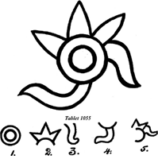
Anahtar
Tablet 1055: Şekil 1: Bu Yaratıcı’nın, Tanrı’nın simgesi olan Güneş Ra’nın Uygur veya Kuzeyli sembolü.
Şekil 2: Bu, üç uçlu bir şekil. Mu’nun temel sembollerinden biri. Onun rakamsal sembolü.
Şekil 3: Sözün ve konuşanın sembolü olan bir dil. Bu dil Ra’dan uzanıyor, dolayısıyla Tanrı’nın sözü.
Şekil 4: Bu ise hem Ra’ya hem Mu’ya bağlı başka bir dil. Yani Yaratıcı, Tanrı, Mu aracılığıyla konuşuyor.
Açıklama: Yaratıcı, Tanrı, Mu’nun ağzı aracılığıyla konuşuyor.
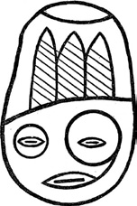
Tablet 1780
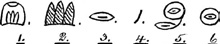
Anahtar
Tablet 1780:
Şekil 1. Başrahibin başlığı, üzerindeki süsleme üç tüyden oluşmuş, yani Mu’nun rakamı. Tüy, Hakikat’in sembolü.
Şekil 2: Süsleme üç tüyden oluştuğu için ayrı bir anlamı daha var. Üç tüy yalnızca Kral ve Başrahip tarafından takılabilirdi. Mu’da Kral aynı zamanda Başrahip’ti, dolayısıyla görülen baş Kral-Başrahip Ra Mu’ya ait.
Şekil 3: Başrahibin ağzı.
Şekil 4: Ağız ve sol göz arasındaki bağlantı.
Şekil 5: Sol gözün etrafında geniş bir çember; Yaratıcı’nın, Yüce’nin sembolü olan Güneş var. Ağızla bağlantılı olduğuna göre Yaratıcı, Ra Mu’nun ağzı aracılığıyla konuşuyor.
Şekil 6: Sağ gözün etrafında Ay’ın, Gece’nin, sembolü olan küçük bir çember var.
Açıklama: Yaratıcı’nın gözleri, gündüz ve gece her şeyi görür. O, Ra Mu’nun Ağzı aracılığıyla konuşur Hakikat’i.
Tablet 51:
Şekil 1: Başlığın üzerinde Diriliş ve Sudan Çıkış sembolü olan Tau var.
Şekil 2: Tau’nun tepe kısmı hiyeratik M harfi. Mu’nun alfabetik sembolü.
fiekil 3: Başlığın iki yanından çubuklar hâlinde 3 rakamı sarkıyor. Mu’nun rakamsal sembolü.
Şekil 4: Kapalı, kör gözler. Yüz bir insana ait olduğu için, insan gözünün henüz toprağı görmediğini söylüyor. insan daha ortaya çıkmamış.
Şekil 5: Çenenin hemen altındaki, dünyanın merkezinin, “yeraltının alevlerinin”, volkanik gazların antik sembolü bize, karaların suyun üzerine volkanik gazlarla yükseldiğini söylü-
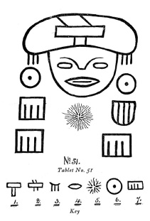
yor. Bu sembol, açıklamalarıyla birlikte Anayurt’un Kutsal İlhamlı Metinleri’nde görülüyor.
fiekil 6: Yüzün her iki yanında Yaratıcı’nın Naga tarzındaki sembolü görülüyor. Böylece karaların su üzerine çıkmasının Yaratıcı’nın isteği veya arzusuyla gerçekleştiği anlatılıyor.
Şekil 7: Çizgili kutu şekilleri Dört Büyük Temel Kuvvet ve işleyişleri ile ilgili.
Açıklama: Sembolü Ra adlı Güneş olan İsimsiz Yüce Yaratıcı’nın emriyle, onun dilek ve arzularından oluşan Kutsal Dörtlü -Dört Yüce Temel Kuvvet- üzerinde daha yaratılmamış olan insanın yaşayacağı okyanus yatağını suların üzerine çıkarırken gücünden faydalanmak amacıyla, yeraltının alevlerini devreye soktu. Kara, emre uygun biçimde yükseltilmiş ve üzerinde insan yaratılmıştı, buranın adı Mu Ülkesi idi.
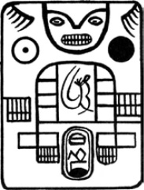
Tablet 1
Tablet 1:
Bu tabletin üzerindeki işlemeler bir tapınağın zemin planını oluşturuyor. Tablet, sunağın bulunduğu Santiago Ahuizoctla’ya oldukça yakın konumdaki San Miguel Amantla’da keşfedildi. Bu iki mekânın yakınlığı göz önüne alınırsa, zemin planının sunağın bulunduğu tapınağa ait olması mümkün görünüyor, özellikle de tapınağın Kutsal Dörtlü’yü temsil ettiği düşünüldüğünde. Öte yandan bunun üzerinde çok fazla durmak da doğru değil, çünkü Niven’in koleksiyonunda birçok tapınak planı var ve bunların hepsi Kutsal Dörtlü’ye adanmış.
Üzerinde iki yazıt olmasıyla bu taş, herhangi türden bir yazı bulunduran ender Meksika Taş Tabletleri arasında. Arkeolojik olarak deşifre edilecek üç bölümü var, zira bölümlerin her biri diğerlerinden tamamen ayrı.
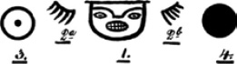
1. Bölüm
Bölüm 1, Şekil 1: Yukarıda, ortada bir insan yüzü yer alıyor. Bu yüzün anayurt Mu’nun başrahibi olan Ra Mu’ya ait olduğu gösterilecek.
Şekil 2a ve 2b: Onun takdis ve lütufla açılmış elleri.
Şekil 3: Yaratıcı’nın kolektif simgesi olan Güneş Ra’nın sembolü takdis ve lütfun sonsuz ile ilgili olduğunu anlatıyor. Ellerin aşağısına yerleştirilmiş olmasının anlamı, ondan geldiğinin işareti.
Şekil 4: Güneş Kui’nin sembolü ve adı, yani Gök küre.
3 numaralı sembol, başka adlarla beraber Krallar Kralı adını da taşıyordu. Kui’nin eklenmesiyle bunun dünyevi Kralların Kralı olduğunu gösteriyor. Dolayısıyla üst kısmın okunuşu şöyle: “Kralların Kralı olan Yüce Yaratıcı’nın ağzı, Güneş İmparatorluğu’nun Kral-Başrahibi Ra Mu’nun takdis ve lütfu, tapınağınız ve halkınızın üzerine olsun.”
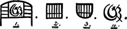
2. Bölüm
Bölüm 2, Şekil 1: Bu, merkezindeki Kutsallar Kutsalı’nın her iki yanında dörder odası bulunan, dört duvarlı bir tapınak planı.
Şekil 2: Tapınağa girişinin sol tarafındaki kare şekilli sütun. Kare, gücün sembolü. Dolayısıyla bu sütun “Güç”ü temsil ediyor.
Şekil 3: Bu yuvarlak veya yuvarlatılmış bir sütun ve tapınağa girişin sağ tarafına yerleştirilmiş. Yuvarlak bir sütun kurulmanın veya tamamlanmanın sembolü. Dolayısıyla bu sütun “Kurulma”yı temsil ediyor. Sütunların her birinde beş çizgi bulunuyor ve bunları kesen, vurgu sıfatı amaçlı başka bir çizgi daha var. Beş, tüm Tanrısallığın, yani Yaratıcı ve onun Dört Büyük Temel Kuvveti’nin rakamsal sembolüydü. Bu durumda sütunların söylediği, “Bu tapınak Yüce Yaratıcı için, güç ile kurulmuştur.”
Şekil 4: Bu Kutsallar Kutsalı odasında görülen bir şekil. Uygur veya kuzey yazı tarzında ve anlamı şu: “Bir hakikat tapınağı, Güneş’e (Tanrı’ya) adanmış ve Anayurt’un Hükmü’ne tabi.”
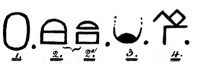
3. Bölüm
Bölüm 3, Şekil 1: Tapınağın girişindeki sütunlar arasında görülen bir kabartma.
Şekil 2: Bu, hiyeratik T ve M harflerinin şekil 2a’da görüldüğü gibi bir araya gelmelerinden oluşmuş bileşik bir şekil. M, Mu’nun ve Batı Toprakları’nın hiyeratik şekli. T neyi veya hangisini olduğunu belirtiyor. Düz okunuşu basitçe şöyle:
“Mu-Batı Toprakları”
Şekil 3: Ufukta görülen doğan güneş, ışınsız hâliyle bir koloninin antik sembolü. Işınlar göründüğünde bu bir koloni imparatorluğun sembolü oluyordu. Yani bu ülkenin Mu’nun kolonilerinden biri olduğu anlatılıyor. fiekil 4: Doğan güneşin kenarına eklenen bu şekil bir isim, koloninin ismi. Yalnızca kısmen okuyabildiğim için ismi boş bırakacağım. Bu kabartmanın üzerindeki yazının söylediği şu: “Bu ülkesi, Mu-Batı Toprakları’nın bir kolonisi.”42
42 Masonların kullanımı için bu tabletin tercümesini Kayıp Mu Kıtası’nın ilk baskısına göre daha kapsamlı hâle getirdim.